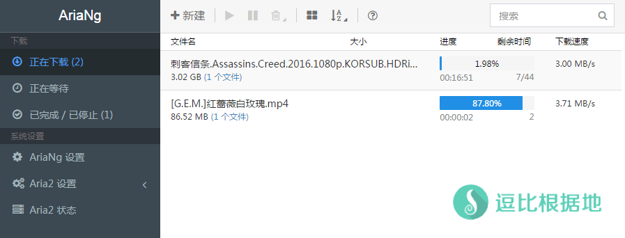
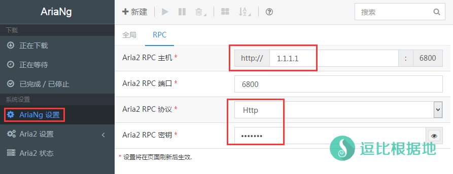
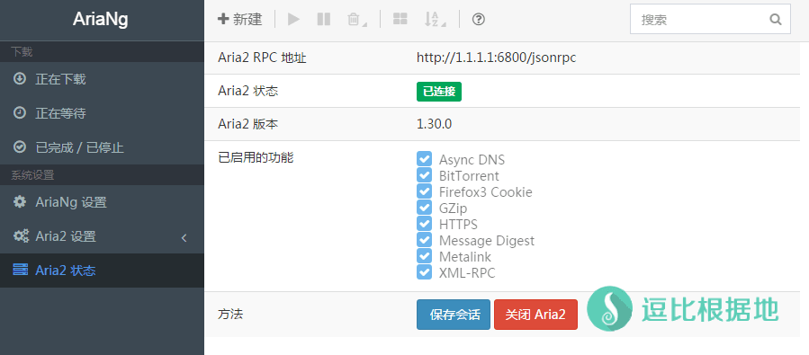

以前我写过一个Aria2的前端在线管理面板 Aria2 WebUI，不过教程有一些问题我现在看来并不是很满意，所以打算重制一个教程，同时前端管理面板也更换为一个逗比推荐的。
旧教程：一个支持 离线下载/BT/磁力链接 的Aria2在线管理面板 —— Aria2 WebUI
简单介绍
Aria2是一个命令行下运行、多协议、多来源下载工具，支持磁力链接、BT种子、HTTP、FTP等下载协议，当然因为它是命令行下载工具，所以我们想下载一个东西还需要去敲命令自然是不方便，于是就有一些人根据Aria2的API开发了一些在线管理面板，可以直接在网页上面添加管理任务。
本教程介绍的是 AriaNg，Github项目：https://github.com/mayswind/AriaNg
Aria2是一个后端(服务端)的程序，而 AriaNg是一个前端(HTML+JS静态)控制面板，不需要和 Aria2(后端/服务端)放在一个服务器或者设备中，你甚至可以只在服务器上面搭建Aria2后端，然后访问别人建好的 AriaNg前端面板，也可以远程操作Aria2后端！

教程环境
- 一个纯净的 Debian 8 x64 系统的服务器（VPS）
- 一个域名（可选）
注意：本教程全程都是 Debian 8 x64系统，请按照我的完整步骤操作，如果系统不一样或者步骤操作不完整导致出错，不要怪教程XXXXX！！！
安装 Aria2(后端/服务端)
一键脚本安装
wget -N --no-check-certificate https://raw.githubusercontent.com/ToyoDAdoubiBackup/doubi/master/aria2.sh && chmod +x aria2.sh && bash aria2.sh
手动安装步骤
看这个教程：BT/种子/磁力链接/HTTP/FTP 离线下载工具 —— Aria2 新手动安装教程
默认我已经配置好了 Aria2的配置文件，如果你想要修改，那么你可以输入 vi /root/.aria2/aria2.conf 或者 把这个文件下载到本地修改（有中文注释，# 井号是注释的，不懂的参数不要乱动，默认就好）。
主要就是下面这两个选项：下载目录(dir)、RPC监听端口(rpc-listen-port)、RPC令牌(rpc-secret)，默认是下面这样：
下载目录：dir=/usr/local/caddy/www/aria2/Download
RPC监听端口：rpc-listen-port=6800 (默认#注释)
RPC令牌：rpc-secret=DOUBIToyo (建议修改)
RPC令牌就相当于 Aria2(后端/服务端)远程API连接的授权密码，默认是开启的PRC令牌是 DOUBIToyo
正式使用建议更改 PRC监听端口和令牌 ，避免安全隐患！
Aria2(后端/服务端) 使用方法
一键安装
看这里：https://doub.io/shell-jc4/#使用说明
手动安装
点击展开 查看更多
启动 Aria2(后端/服务端)
nohup aria2c -c > /root/.aria2/aria2.log 2>&1 &
如果使用 nohup 进程无法后台运行或者其他问题，请看这个
一些服务器的 nohup 并不好用，所以换到其他的保持进程的软件就行了，这里用 screen
apt-get install screen -y
# 安装并运行 aria2 即可
screen -dmS aria2 aria2c -c
# 用下面这个命令可以进入aria2回话，查看输出信息什么的
screen -r aria2
停止 Aria2(后端/服务端)
kill -9 $(ps -ef|grep "aria2c"|grep -v "grep"|awk '{print $2}')
重启就是先停止后启动喽~
查看 Aria2输出的日志
tail -f /root/.aria2/aria2.log
这个命令是监控 日志输出，如果想要退出监控，那么按 Ctrl+C 键即可。
安装 AriaNg(前端/HTML+JS)
Github项目：https://github.com/mayswind/AriaNg
下载地址：https://github.com/mayswind/AriaNg/releases/latest
AriaNg是一个前端(HTML+JS静态)控制面板，不需要和 Aria2(后端/服务端)放在一个服务器或者设备中，你甚至可以只在服务器上面搭建Aria2后端，然后访问别人建好的 AriaNg前端面板，也可以远程操作Aria2后端！
AriaNg官方演示页面：http://ariang.mayswind.net/
本地安装（可选）
点击展开 查看更多
AriaNg是一个 HTML+JS 纯静态一个Aria2的Web面板，所以不需要编译任何环境。
AriaNg的前端面板可以放在你本地电脑上面，下载解压后后直接用浏览器打开 index.html 文件就能使用了。
服务器安装
点击展开 查看更多
在本地安装 AriaNg的话，只能局域网内访问，想要其他地方访问，还是要在服务器上面安装HTTP服务器。
这里安装 Caddy 一个很简单的HTTP服务器，如果你想要使用Nginx/Apache或者LNMP一键包之类的，使用方法自行谷歌。
wget -N --no-check-certificate https://raw.githubusercontent.com/ToyoDAdoubiBackup/doubi/master/caddy_install.sh && chmod +x caddy_install.sh && bash caddy_install.sh install http.filemanager
安装Caddy成功后，继续新建一个虚拟主机文件夹，
mkdir /usr/local/caddy/www && mkdir /usr/local/caddy/www/aria2
如果你要用 IP 的话，Caddy 配置文件这样写：
# 以下全部内容是一个整体，是一个命令，全部复制粘贴到SSH软件中并一起执行！
echo ":80 {
root /usr/local/caddy/www/aria2
browse /Download
timeouts none
gzip
}" > /usr/local/caddy/Caddyfile
如果你要用 域名 的话，Caddy 配置这样写：
# 重新写入配置到 Caddy 配置文件，注意下面这五行要一起复制粘贴！toyoo.pw 改成你自己的域名，然后去域名托管商解析你的域名即可 #
# 以下全部内容是一个整体，是一个命令，全部复制粘贴到SSH软件中并一起执行！
echo "http://toyoo.pw {
root /usr/local/caddy/www/aria2
browse /Download
timeouts none
gzip
}" > /usr/local/caddy/Caddyfile
接着安装 AriaNg。
首先我们先安装解压缩依赖：
# CentOS 系统：
yum install unzip -y
# Debian/Ubuntu 系统：
apt-get install unzip -y
然后继续：
# 新建Aria2下载文件夹 并进入文件夹 #
mkdir /usr/local/caddy/www/aria2/Download && cd /usr/local/caddy/www/aria2
# 下载并解压 AriaNg 文件，这段代码会自动检测并下载最新版本 #
Ver=$(wget --no-check-certificate -qO- https://api.github.com/repos/mayswind/AriaNg/releases/latest | grep -o '"tag_name": ".*"' | sed 's/"//g;s/tag_name: //g') && echo ${Ver}
# 如果上面自动检测最新版本的代码返回空白或者错误，那么请访问 https://github.com/mayswind/AriaNg/releases/latest 来查看最新版本号。
# 例如手动获取的版本号是 0.5.0，那么手动执行命令： Ver="0.5.0" ，然后继续下面步骤即可。
wget -N --no-check-certificate "https://github.com/mayswind/AriaNg/releases/download/${Ver}/AriaNg-${Ver}.zip" && unzip AriaNg-${Ver}.zip && rm -rf AriaNg-${Ver}.zip
# 赋予虚拟主机文件夹权限 #
chmod -R 755 /usr/local/caddy/www/aria2
上面代码都执行完后，就可以启动 Caddy了。
/etc/init.d/caddy start
如果Caddy 运行正常，那么你打开http://IP或域名/即可看到 AriaNg的页面了。
Caddy 使用方法
启动：/etc/init.d/caddy start
停止：/etc/init.d/caddy stop
重启：/etc/init.d/caddy restart
查看状态：/etc/init.d/caddy status
Caddy 配置文件：/usr/local/caddy/Caddyfile
Caddy 虚拟主机：/usr/local/caddy/www
AriaNg 虚拟主机文件夹：/usr/local/caddy/www/aria2
AriaNg 下载文件夹：/usr/local/caddy/www/aria2/Download
配置 AriaNg
点击展开 查看更多
进入AriaNg的网页后，默认是英文语言，你可以 点击左侧选项菜单 —— AriaNg Setting ，然后在新页面中 Language选项选择 简体中文，然后刷新页面后即可生效。
如果你的 Aria2(后端/服务端)还没有运行，请先根据 Aria2使用说明 启动 Aria2(后端/服务端)。
依然是 左侧选项菜单 —— AriaNg 设置 —— RPC —— 依次输入/选择下图各选项。
- Aria2 RPC 主机：就是填写你 安装Aria2(后端/服务端)的服务器IP 或者 域名。
- Aria2 RPC 端口：默认
6800。
- Aria2 RPC 协议：选择
http，如果你配置了https，那么就选择https。
- Aria2 RPC 密匙：输入你的RPC密匙(令牌)，如果你安装后没有修改配置文件中的RPC密匙(令牌)，那么你这里需要填写
DOUBIToyo。
强烈建议打开 RPC密匙(令牌)来保证安全性。
设置完毕后，刷新页面即可生效。
正常情况下，右上角会提示 连接成功，点击左侧选项菜单 —— Aria2 状态，即可看到当前 AriaNg 前端面板连接到的 Aria2(后端/服务端)的信息。


在线下载/观看
我发现这个 AriaNg前端面板，下载文件后不会显示 HTTP文件下载链接，这个很蛋疼，这是我感觉这个前端面板 唯一一点不完美的地方。
上面安装 Caddy的时候，就已经配置了目录列表功能，所以访问：http://ip/Download，就能看到下载文件了。
实现网盘式操作
Caddy自带的目录列表功能很简陋，不能 新建/重命名/移动/删除 文件/文件夹等操作，所以可以使用 Caddy的 FileManager 扩展。
参考使用方法看这里。
注意事项
AriaNg前端面板并不会保存任何设置，所有设置都是 从 Aria2(后端/服务端)的启动参数或者配置文件中获取的。
AriaNG 前端访问加密码
点击展开 查看更多
AriaNG只是一个 远程操作Aria2的一个前端面板，所有数据都是保存在浏览器本地的，所以即使你用别人的，或者别人用你的AriaNG前端面板，都不会有影响。
当然，如果你不想让别人用，那么可以修改Caddy的配置文件实现访问输入密码。
格式如下：
basicauth / user passwd
user指的是 用户名，passwd指的是 用户名密码，设置这个后，访问网页就需要输入用户名和密码来验证了！
注意：用户名和密码不支持特殊符号，必须使用 数字和字母 [a-z][A-z][0-6]
修改配置文件后，记得重启 Caddy ！
配置示例：
# 以下全部内容是一个整体，是一个命令，全部复制粘贴到SSH软件中并一起执行！
echo "http://toyoo.pw {
root /usr/local/caddy/www/aria2
basicauth / user passwd
browse /Download
timeouts
none
gzip
}" > /usr/local/caddy/Caddyfile
启动显示成功，但是实际未运行
点击展开 查看更多
因为 服务脚本判断的问题，只判断了nohub是否运行 Caddy成功，但没有判断 Caddy 是否保持正常运行。
你可以理解为，nohub成功启动了 Caddy，但是 Caddy因为配置文件错误等原因，启动后又退出了。
所以这种情况下，你应该去查看启动日志：
tail -f /tmp/caddy.log
Caddy启动失败，打开 http://ip 显示的是 It works !
点击展开 查看更多
一些系统会自带 apache2 ，而 apache2 会占用80端口，导致Caddy无法绑定端口，所以只要关掉就好了。
netstat -lntp
# 我们可以通过这个命令查看是不是被其他软件占用了 80 端口。
不过 apache2 会默认开机自启动，如果不需要可以关闭自启动或者卸载 apache2 。
停止 Apache2
/etc/init.d/apache2 stop
# 尝试使用上面这个关闭，如果没效果或者提示什么错误无法关闭，那就用下面这个强行关闭进程。
kill -9 $(ps -ef|grep "apache2"|grep -v "grep"|awk '{print $2}')
取消开机自启动
update-rc.d -f apache2 remove
卸载 Apache2
apt-get remove --purge apache2
关闭 Apache2后，就可以尝试启动 Caddy ，并试试能不能打开网页。
/etc/init.d/caddy start
Aria2(后端/服务端)启动成功，但是 AriaNg 无法连接
点击展开 查看更多
这个可能是防火墙的问题，开放防火墙端口即可。
需要开放两个端口，一个是RPC监听端口 6800(默认)，一个是BT监听端口 51413(默认)。
不清楚端口的话，可以打开配置文件去看 vi /root/.aria2/aria2.conf ，或者查看本地端口监听情况 netstat -lntp 。
iptables -I INPUT -m state --state NEW -m tcp -p tcp --dport 端口 -j ACCEPT
iptables -I INPUT -m state --state NEW -m udp -p udp --dport 端口 -j ACCEPT
# 删除防火墙规则，内容一样把 -I 换成 -D 就行了：
iptables -D INPUT -m state --state NEW -m tcp -p tcp --dport 端口 -j ACCEPT
iptables -D INPUT -m state --state NEW -m udp -p udp --dport 端口 -j ACCEPT
关于版权问题，大部分地区是禁止下载BT和盗版文件的
大部分IDC都是对版权文件敏感，特别是美国的VPS，当你下载BT和磁力链接文件的时候，很有可能会被封VPS。
所以请自行选择 版权文件不敏感的 瑞典 乌克兰 俄罗斯 罗马尼亚 地区的IDC的VPS。
其他的支持离线下载 BT和磁力链接的教程：https://doub.io/all-one/#BT、磁力链接下载 相关教程
另一个同样也是很简洁的 Aria2管理面板：https://github.com/NemoAlex/glutton（如果你们需要我可以把这个的安装步骤加上）
转载请超链接注明：逗比根据地 » 『重制』一个支持 离线下载/BT/磁力链接 的Aria2在线管理面板 —— AriaNg
责任声明：本站一切资源仅用作交流学习，请勿用作商业或违法行为！如造成任何后果，本站概不负责！


Aria2NG承担一个可视化操作Aria2后端的作用，所以就是他给Aria2后端发送命令的，然后Aria2后端再执行命令。
----脚本开始---- ----脚本结束----
注意：不要复制脚本开始和脚本结束这个两行
/usr/local/bin/aria2c自己改为自己的aria2启动目录，包安装目录应该是/usr/bin/aria2c--conf-path=/root/aria2.confaria2配置文件目录，自己更改为自己的请将上述脚本保存为
/etc/systemd/system/aria2.service并执行
systemctl enable aria2.service && systemctl start aria2.service启动：systemctl start aria2.service
停止：systemctl stop aria2.service
重启：systemctl restart aria2.service
状态：systemctl status aria2.service
----脚本开始----
#!/bin/sh ### BEGIN INIT INFO # Provides: aria2 # Required-Start: $local_fs $remote_fs # Required-Stop: $local_fs $remote_fs # Should-Start: $network # Should-Stop: $network # Default-Start: 2 3 4 5 # Default-Stop: 0 1 6 # Short-Description: aria2c init script. # Description: Starts and stops aria2 daemon. ### END INIT INFO #启动用户，不懂可以不改 USER="root" #aria2启动目录，我这个是编译安装的目录，包安装目录应该是/usr/bin/aria2c，自行更改。 DAEMON=/usr/local/bin/aria2c #配置文件目录，自行更改 CONF=/root/aria2.conf start() { if [ -f $CONF ]; then echo "Starting aria2 daemon" start-stop-daemon -S -c $USER -x $DAEMON -- -D --conf-path=$CONF else echo "Couldn't start aria2 daemon for $USER (no $CONF found)" fi } stop() { start-stop-daemon -o -c $USER -K -u $USER -x $DAEMON } status() { dbpid=`pgrep -fu $USER $DAEMON` if [ -z "$dbpid" ]; then echo "aria2c daemon for USER $btsuser: not running." else echo "aria2c daemon for USER $btsuser: running (pid $dbpid)" fi } case "$1" in start) start ;; stop) stop ;; restart|reload|force-reload) stop start ;; status) status ;; *) echo "Usage: /etc/init.d/aria2 {start|stop|reload|force-reload|restart|status}" exit 1 esac exit 0----脚本结束---注意：不要复制脚本开始和脚本结束这个两行
请将上述脚本保存为
/etc/init.d/aria2启动：service aria2 start停止：service aria2 stop
重启：service aria2 restart
状态：service aria2 status
bash caddy_install.sh install filemanager？难道你看到的是网页缓存？Aria2只能指定一个目录，当然可以每次下载不同文件的时候替换为不同的目录，但是很麻烦。
第二个问题：这个只能安装网盘/类网盘程序去管理(php)。
Caddy只是一个HTTP服务器，AriaNg只是一个前端的控制面板。
AriaNg可以下载到本地，然后双击
index.html浏览器就能打开了，他只是一个纯静态的面板。你在AriaNg里面设置 Aria2 IP和密匙等信息，然后AriaNg会去链接 Aria2后端，连接上了就会提示成功，然后去操作后端。
任何下载行为都是由 Aria2后端执行的，而AriaNg只是一个可视化操作他的工具。
自从写了 Aria2+前端面板的教程后，我遇到太多不理解 Caddy、AriaNg和Aria2之间关系的幼稚问题了，我的文科不行，我没办法去表达清楚 让你们更好的理解 他们之间的关系。
你只要记住，前端是前端，后端是后端，前端的IP或者域名，给别人，别人也无法连接你的后端，别人需要知道你的后端IP和端口和密匙。
而只要别人知道了你的 后端IP和端口和密匙，那么他就不需要你这个前端，他自己搭建或者用别人搭建好的前端，就可以控制你的后端了。
你还是不理解他们直接的关系和各自的作用，剩下的自己理解，我说不明白。
不管是迅雷还是什么，都是这样，你把下载链接提交给服务器，然后他慢慢下载，下载完后，你就可以从服务器上面下载这个文件了。
迅雷离线下载，是在迅雷的服务器上面，而这些则是自己的服务器上面。
显示这个可能是你的系统预装了apache，用这个命令看看
netstat -lntp是不是有程序占用了80 端口。service apache2 stop # 尝试使用上面这个关闭，如果没效果或者提示什么错误无法关闭，那就用下面这个强行关闭进程。 kill -9 $(ps -ef|grep "apache2"|grep -v "grep"|awk '{print $2}')